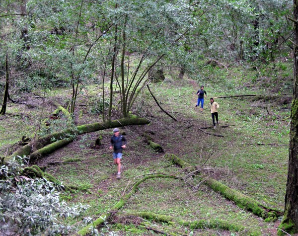
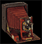

Along lower Anchor Tree Trail.
|

| File size | 3660461 |
| Original date | February 28, 2009 11:57 AM |
| Resolution | 3223 x 2556 |
| Flash | Flash did not fire, auto |
| Focal length | 11.454mm |
| Exposure time | 1/25s |
| Aperture | 3.5 |
| Focus Distance | |
| Metering Mode | Multi-segment |
| Camera make | Canon |
| Camera model | Canon PowerShot SD950 IS |
| Sensor type | OneChipColorArea |
|